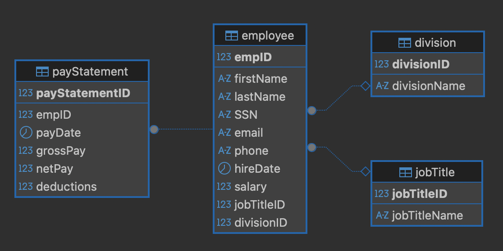

A team-based software engineering project for Company “2” focused on designing and implementing a minimal working Employee Management System using Java, JDBC, and MySQL. The system provides a console-based UX for managing employee records, updating salary data, searching employees, and generating payroll-related reports.
The project scenario required a minimal working employee management system for a small company with fewer than twenty full-time employees. The company had no GUI/UX and needed a working system connected to a MySQL database for managing employee data and generating reports.
This project demonstrates my work in software design, backend logic, test planning, and technical documentation for a database-driven Java application. It includes project documentation, DAO-aligned test cases, SQL/database artifacts, Java source files, and a video demonstration of the working system.
The Employee Management System uses a layered modular design with a console-based UI, a Java application/data-access layer, and a MySQL backend. JDBC is used to connect the Java application to the relational database.
The database centers on the employee table and its relationships with division, jobTitle, and payStatement. This supports employee lookup, pay history, and grouped reporting across organizational units.

Formal design documentation covering system overview, architecture, data dictionary, component design, human interface design, and the requirements matrix.
Structured test cases for employee update, search, and salary update functionality, including happy paths, edge cases, and database validation behavior.
The project requirements called for detailed programming tasks and pass/fail test cases. The submitted testing materials focus on three major functional areas:
These tests validate both direct method behavior and resulting database state using SQL verification. They include boundary cases, missing employee IDs, no-result searches, and empty salary ranges.
Application entry point and console UX for selecting and executing EMS features.
Data model for employee records, including identifying and display information.
Primary data access layer for employee search, insert, update, salary adjustment, and reporting.
JDBC connection manager used throughout the system for database operations.
Creates the database structure, tables, keys, and relationships used in the system.
Populates the database with sample employee, division, job title, and pay statement data.
Recorded walkthrough of the working system demonstrating core features such as search, update, insert, and reporting.